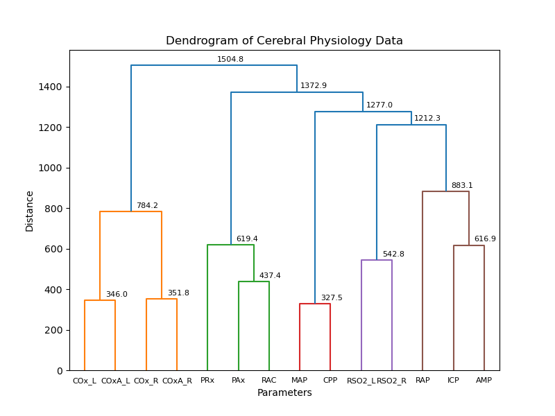
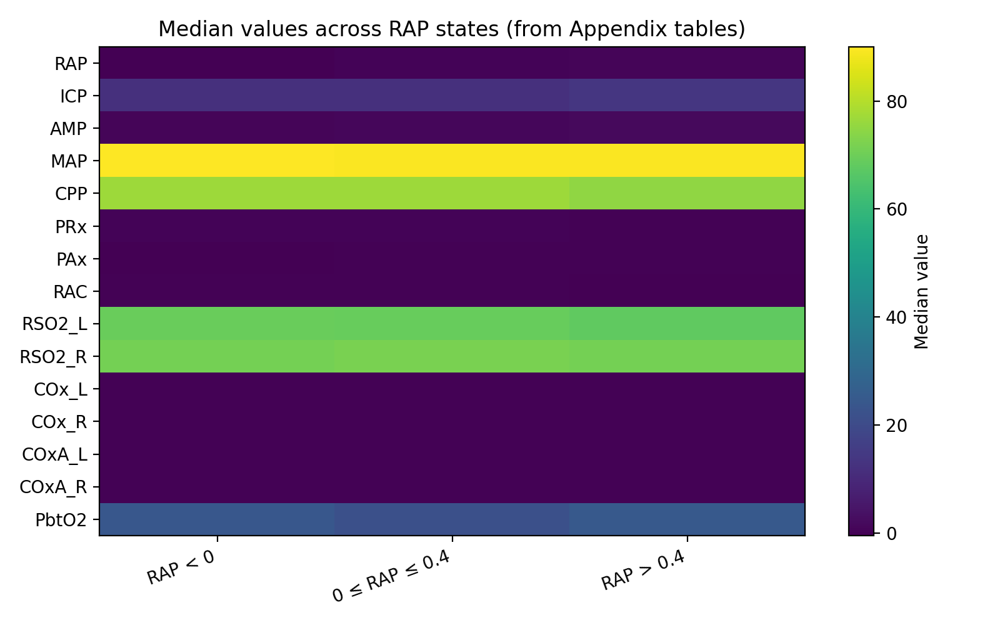
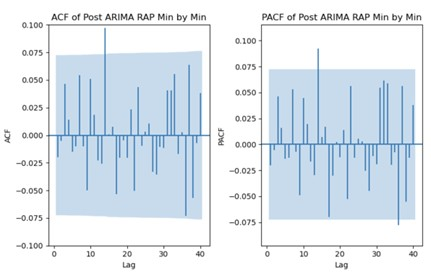
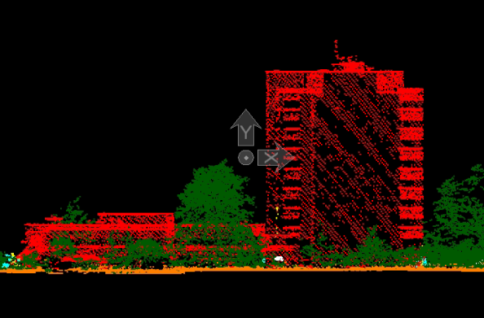
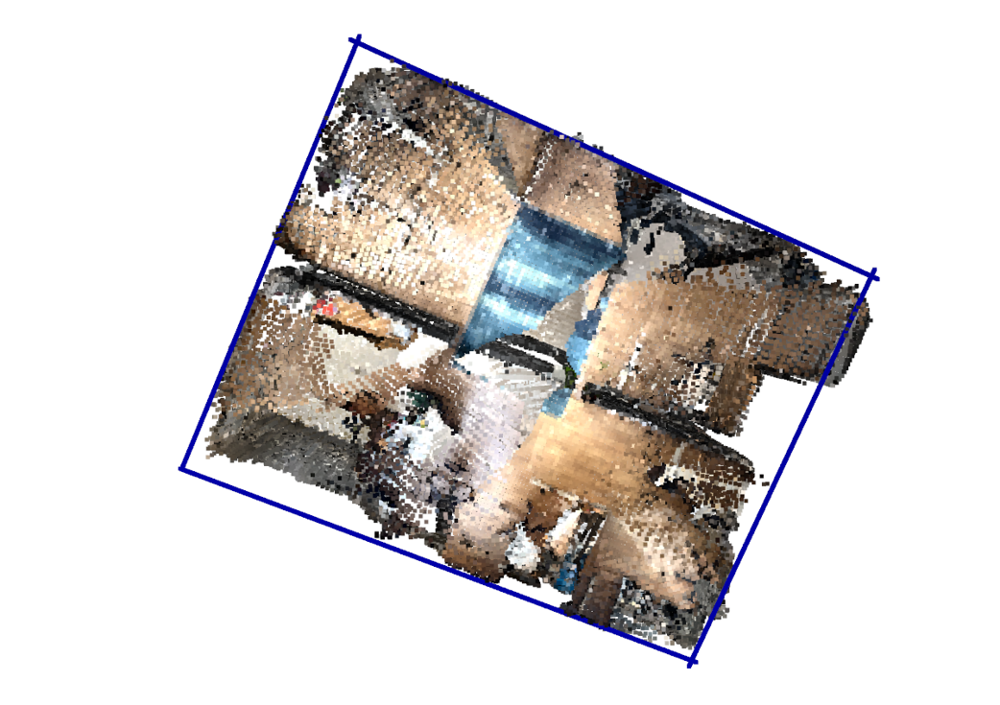
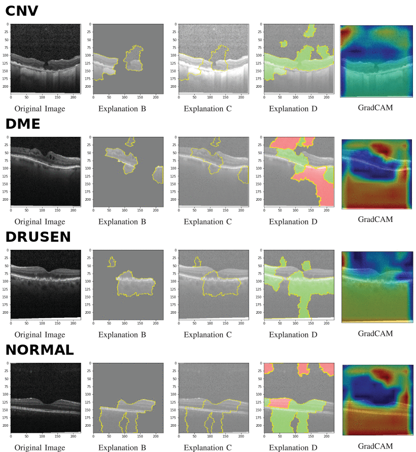
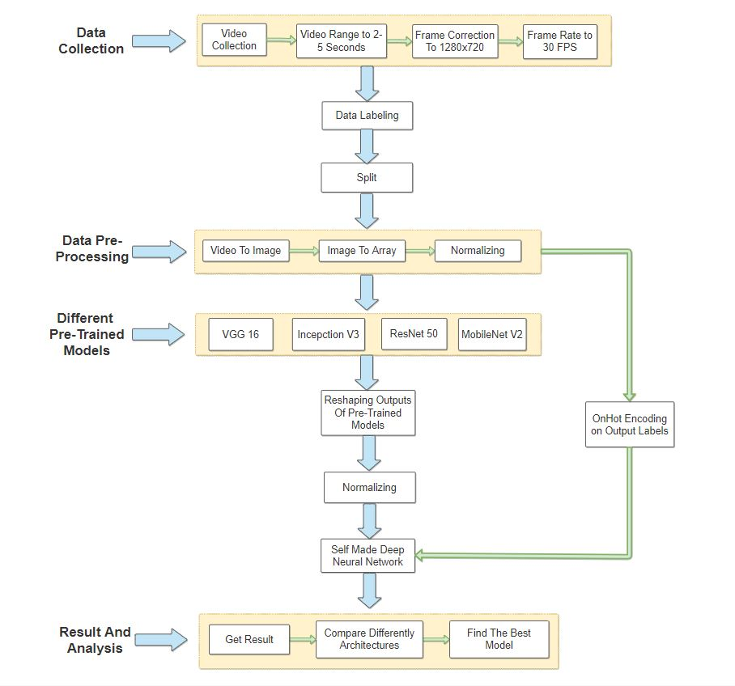

About
I am an AI & Data researcher with strong experience in GenAI (VLM/LLM), statistics, and exploratory data analysis (EDA). My recent work includes applications of VLMs and LLMs in industry, multimodal physiological (time series) data modeling, and artifact detection using statistical and ML techniques.
Recently, I have worked as a Graduate Research Assistant at MAIN-HUB Laboratory at the University of Manitoba. Prior to that, I worked as an AI & Data Engineer at HawarIT Limited.
Having recently completed and successfully defended my Master’s thesis, I am now focused on applying data modeling and machine learning methods in real-world, applied settings.
Connect with Me
Skills
GenAI & Large Language Models
VLMs, LLMs, prompt engineering, RAG pipelines, model fine-tuning, semantic search, zero/few-shot prompting
Computer Vision
CNNs, transfer learning, object detection, image classification, semantic & instance segmentation, OCR, PDF layout analysis
Time Series Modeling
Transformer architectures, ARIMA, SARIMA, VARIMA, ETS, forecasting, temporal pattern analysis
Data Science
EDA, hypothesis testing, data cleaning, visualization, predictive modeling, model evaluation, clustering(KMCA, AHC, PCA)
Healthcare & Biomedical AI
Multimodal physiological signal analysis, artifact detection, biomedical signal processing, statistical & ML analysis, clinical data visualization
Statistical Methods
Autocorrelation analysis (ACF/PACF), Pearson/cross-correlation, descriptive statistics, model selection (AIC/BIC/LL), comparison tests, staionarity analysis
Geospatial Analytics
GIS data processing, spatial analysis, coordinate systems, point cloud processing, segmentation, QGIS, RANSAC-based classification
Programming & Frameworks
Python, PyTorch, TensorFlow, Keras, HuggingFace, Scikit-learn, Statsmodels, NumPy, Pandas, OpenCV, SQL (MySQL, PostgreSQL), C#/C++, Java
Experience & Education
Graduate Research Assistant
Sep 2023 - Feb 2026
MAIN-HUB Laboratory, University of Manitoba
Winnipeg, Manitoba, Canada
- Conducted time series modeling on cerebral physiological data.
- Implemented artifact detection algorithms for continuous cerebral monitoring signals.
- Analyzed temporal relationships through EDA, clustering and high-frequency response.
- Contributed to 20 journal publications, including 5 as lead author.
- Mentored and guided junior colleagues on ongoing projects.
AI & Data Engineer
Aug 2021 - Aug 2023
HawarIT Limited
Dhaka, Bangladesh
- Developed and deployed geospatial AI pipelines for different clients as per request.
- Extracted and processed large-scale geospatial and sensor datasets from multiple sources.
- Designed data pipelines for cleaning, transformation, and storage of structured and unstructured data.
- Translated complex computer vision and spatial AI solutions into business-focused explanations for non-technical clients.
- Managed clients’ expectations by clearly explaining system limitations, iteration cycles, and realistic deployment timelines.
- Supervised interns on project development and implementation.
AI Engineer Intern
Jun 2021 - Aug 2021
Opus Technology Limited
Dhaka, Bangladesh
- Developed a real-time action recognition system for CSGO to detect different actions.
- Built a modular video-processing pipeline and evaluated multiple transfer learning models.
MSc Biomedical Engineering
Sep 2023 - Feb 2026
University of Manitoba
Winnipeg, Manitoba, Canada
Supervisor: Dr. Frederick A. Zeiler
BSc Electrical & Electronic Engineering
Jan 2017 - Mar 2021
Islamic University of Technology
Dhaka, Bangladesh
Thesis: Lane Navigation through Lateral-Longitudinal Control and Traffic Detection for Autonomous Vehicles
Supervisor: Mr. Mirza Fuad Adnan
Projects
- GenAI
- Time series
- Geospatial
- Computer Vision

Multimodal Fashion Assistant
• Building a LangGraph-based multimodal AI agent using SigLIP2 embeddings, FAISS vector search, and Qwen-VL reasoning for text, image, and image-text fashion product retrieval. • Improved Top-5 retrieval precision from 59% to 81% by adding intent detection, structured query extraction, dynamic image/text routing, candidate filtering, self-checking, and retry logic. • Implemented fast and deep retrieval modes, with the deep mode using an LLM/VLM judge to rerank top FAISS candidates, improving Precision@5 from 81% to 87% on complex multimodal queries. • Developed backend workflows and FastAPI REST endpoints to serve retrieval, reasoning, and response-generation pipelines for online deployment.
{kind=link}

Time Series Covariance Pattern Analysis
Developed a semi-supervised analysis pipeline to uncover latent covariance structures in multivariate EEG and physiological time-series data across multiple temporal resolutions. Implemented preprocessing, normalization, PCA, and both K-means and hierarchical clustering to group variables based on shared temporal behavior. Integrated RAP-based segmentation to enable subgroup analysis and reveal resolution-dependent signal interactions. The framework supports systematic exploration of complex temporal relationships and has been published in MDPI Bioengineering.
{kind=link}

Descriptive Relationships Between Time-series Variables
A descriptive analysis of the relationships between the time series signals, Compensatory Reserve Index (RAP) and multiple intracranial and cerebrovascular physiological parameters derived from multimodal neuromonitoring data. The analysis focuses on characterizing how physiological variables behave across distinct RAP-defined states. Descriptive statistics and comparative visualizations are used to examine shifts in central tendency, dispersion, and distributional behavior across these regimes, providing insight into how cerebral dynamics evolve with worsening compensatory capacity.
{kind=link}

ARIMA Modeling on EEG Time-Series Data
Built a full ARIMA-based analysis pipeline for multivariate EEG, time-series data (in TBI patients). Automated stationarity testing, model selection, residual diagnostics, and ACF/PACF analysis across all patients and signal types. Systematically compared clean and artifact-affected segments to quantify structural differences and identify artifact signatures in RAP behavior. Generated reproducible plots and summary tables to support downstream statistical analysis and modeling of time series. The methodology and findings have been published in MDPI Sensors.
{kind=link}

Lidar Semantic Segmentation
A Python-based deep learning pipeline for classifying 3D point cloud data into semantic classes such as ground, buildings, vegetation, and other structures. The project covers data preprocessing, model training, evaluation, and 3D visualization, and is designed for scalable geospatial applications.
{kind=link}

RANSAC FloorPlan Extractor
A geometry-driven pipeline for reconstructing 2D floor plans from 3D point cloud data. The system identifies dominant planar surfaces such as floors, walls, and ceilings using RANSAC, computes precise wall–floor intersections, and projects these intersections onto the floor plane to generate structured 2D layouts.
{kind=link}

Retinal OCT Disease Classification
Developed an end-to-end deep learning pipeline to classify retinal OCT images into four disease categories. Implemented preprocessing, stratified data splitting, and real-time augmentation to improve generalization. Used a pretrained VGG19 backbone as a fixed feature extractor with a lightweight custom CNN head to learn pathology-specific representations. Tracked training dynamics with loss and accuracy monitoring and evaluated performance on a held-out test set. Integrated LIME-based explainability to provide case-level model interpretations, improving transparency and clinical interpretability. The work has been published in an IEEE conference.
{kind=link}

Action Recognition of CS:GO Counter-Strike
Developed a real-time computer vision system to recognize in-game actions in Counter-Strike: Global Offensive at the frame level. Classified four event types (kill, death, smoke, no action) using multiple deep learning architectures, including VGG16, Xception, InceptionV3, Inception-ResNet-V2, ResNet152-V2, and a custom CNN. Evaluated models to identify the best trade-off between accuracy and inference speed for real-time deployment. Built an automated gameplay video collection and preprocessing pipeline to scale dataset generation and enable structured action statistics for downstream analytics. The work has been published in an IEEE conference.
{kind=link}
Publications
Full list available on Google Scholar
Islam, A.; Stein, K.Y.; Griesdale, D.; Sekhon, M.; Raj, R.; Bernard, F.; Gallagher, C.; Thelin, E.P.; Mathieu, F.; Kramer, A.
Relationship Between RAP and Multi-Modal Cerebral Physiological Dynamics in Moderate/Severe Acute Traumatic Neural Injury: A CAHR-TBI Multivariate Analysis.
Bioengineering, 2025.
DOI |
Paper |
Code
Islam, A.; Sainbhi, A.S.; Stein, K.Y.; Vakitbilir, N.; Gomez, A.; Silvaggio, N.; Bergmann, T.; Hayat, M.; Froese, L.; Zeiler, F.A.
Characterization of RAP Signal Patterns, Temporal Relationships, and Artifact Profiles Derived from Intracranial Pressure Sensors in Acute Traumatic Neural Injury.
Sensors 2025.
DOI |
Paper |
Code
Islam, A.; Marquez, I.; Froese, L.; Vakitbilir, N.; Gomez, A.; Stein, K.Y.; Bergmann, T.; Sainbhi, A.S.; Zeiler, F.A.
Association of RAP Compensatory Reserve Index with Continuous Multimodal Monitoring Cerebral Physiology, Neuroimaging, and Patient Outcome in Adult Acute Traumatic Neural Injury: A Scoping Review.
Neurotrauma Reports 2024.
DOI |
Paper |
Islam, A.; Vakitbilir, N.; Almeida, N.; França, R.
Advances in 3D Bioprinting for Neuroregeneration: A Literature Review of Methods, Bioinks, and Applications.
Micro 2024.
DOI |
Paper |
Islam, A.; Froese, L.; Bergmann, T.; Gomez, A.; Sainbhi, A.S.; Vakitbilir, N.; Stein, K.Y.; Marquez, I.; Ibrahim, Y.; A Zeiler, F.
Continuous monitoring methods of cerebral compliance and compensatory reserve: A scoping review of human literature..
Physiological Measurement 2024.
DOI |
Paper |
Certificates
-
Deep Learning Specialization
Neural Networks and Deep Learning -
DeepLearning.AI TensorFlow Developer
Introduction to TensorFlow for Artificial Intelligence, Machine Learning, and Deep Learning - Convolutional Neural Networks in TensorFlow
- Natural Language Processing in TensorFlow
-
Python for Everybody
Programming for Everybody (Getting Started with Python) - Python Data Structures
- Using Databases with Python
- Using Python to Access Web Data
-
Applied Data Science with Python Specialization
Introduction to Data Science in Python
-
Mathematics for Machine Learning Specialization
Mathematics for Machine Learning: Linear Algebra - Mathematics for Machine Learning: Multivariate Calculus
Contact
Location:
Winnipeg, Manitoba, Canada
Email:
abraroitijjho35@gmail.com